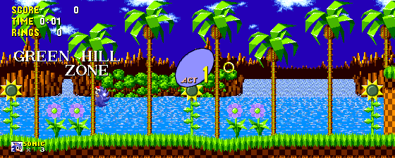
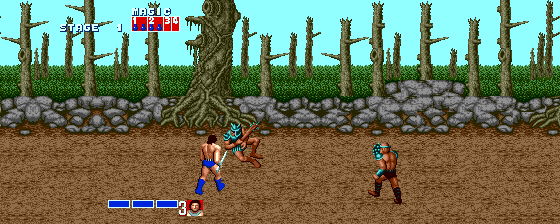

ATARI ST
SemaCore Light
Browse floppy images and zipped disks. Use the Next keyboard, a joystick or a PS/2 mouse. Supported multi-disk games can change disks automatically.
Put your disks in /SemaTor/Games.
CORE SET 1.0.0 ZX SPECTRUM NEXT · KS3 FPGA
Play Atari ST disks, Mega Drive cartridges and Sega’s 8-bit games on the KS3. Each core starts in its own library and keeps its games and saves in its own folder.
ATARI ST
Browse floppy images and zipped disks. Use the Next keyboard, a joystick or a PS/2 mouse. Supported multi-disk games can change disks automatically.
Put your disks in /SemaTor/Games.
MEGA DRIVE
Play cartridge images, keep battery saves and save states, and try wider playfields in supported editions. A Mega Drive pad gives you the console controls.
Put your cartridges in /SemaDrive/Games.
MASTER SYSTEM · GAME GEAR · SG-1000
Give Master System and Game Gear their own picture settings in Global settings → Display. Try scanlines for the TV and the LCD filter for the handheld.
Use /SemaGear/Games/Master System or /SemaGear/Games/Game Gear for the corresponding cartridges.
You need a ZX Spectrum Next KS3, its boot card, a computer with an SD card reader, a free additional core slot for each core you install, and your own game images. A second FAT32 games card is optional. The download contains all three cores. Each library menu shows the installed version. You can find checksums and release notes on the GitHub release page.
SD-CARD.machines folder into the root of the card. You should see /machines/semacore, /machines/semadrv or /machines/semagear for the core you chose.SemaTor, SemaDrive or SemaGear folder into the root of your games card. With one card, put both folders on the boot card. Add your games to the path shown above.Updating an existing install? Keep your games, saves and states. Copy both supplied folders from the same archive. SemaCore’s firmware banks and all 11 modules belong together. SemaDrive needs both copies of sd3.dat. SemaGear needs the matching core3.bit and menu.sdm.
SEMADRIVE LIGHT · IN TESTING
Open the Enhanced library to find a recognised cartridge edition. In the game open Options → Enhancements → Widescreen (SemaEnhanced). Choose 16:9 or 21:9 and close the menu. Choose Off to return to the original 4:3 view.


SemaDrive Light 1.0.0 recognises 29 cartridge editions. Support depends on the edition and scene. Road Rash II has been played widescreen on a physical KS3. Golden Axe’s first fight passed the 16:9 and 21:9 simulation checks and still needs a board retest.
Use a three- or six-button Mega Drive pad. Hold Start + B on the same pad before loading the core or resetting the Next. On SemaCore, release both buttons when prompted. On SemaDrive, hold through reset and then release. On SemaGear, release when the library appears. SemaDrive and SemaGear restore 480p HDMI with sound and 31 kHz VGA. Holding B alone on either of those two cores selects safe video for one boot.